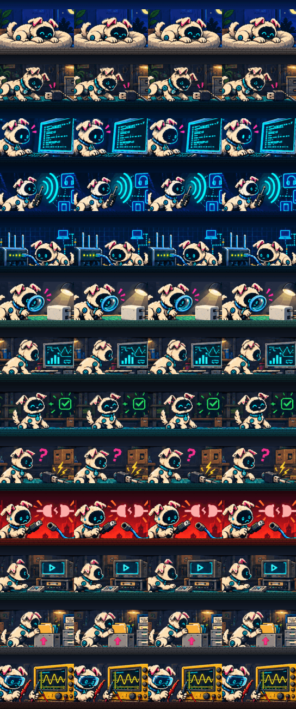
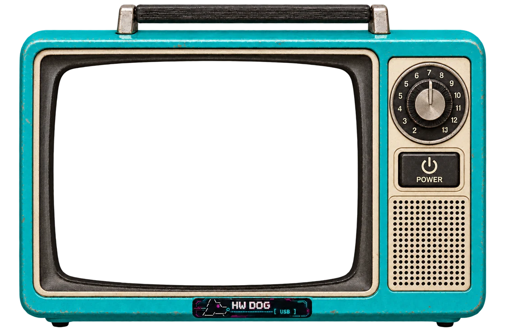

01
LOCAL FIRST
Aucun compte, aucun abonnement, aucune télémétrie. Fonctionne 100 % hors ligne : le cloud n’est jamais requis.
- ACCOUNT
- NONE
- SUBSCRIPTION
- NONE
- TELEMETRY
- OFF
- CLOUD
- NEVER REQUIRED

LOCAL HARDWARE DIAGNOSTIC SYSTEM
Alimentation, USB, série, bus et réseau sur une seule chronologie. Un instrument de diagnostic local-first qui cherche ce qui s’est réellement passé. Pas votre adresse courriel.
hardware companion // SNIFF THE PROBLEM.
Booting core systems...[ OK ] power monitor[ OK ] usb interface[ OK ] serial interface[ OK ] network probe[ OK ] event pipeline[ OK ] trace engine[ OK ] diagnostics rulesDevice ID : HD-001 Firmware : 0.1.0Mode : LOCAL Session : READYType HELP for commands
02 // PRINCIPES
Des limites d’architecture, pas des promesses marketing. Les lois vérifiables sont testées dans le dépôt.
Aucun compte, aucun abonnement, aucune télémétrie. Fonctionne 100 % hors ligne : le cloud n’est jamais requis.
Observation, corrélation et hypothèse restent séparées. Un diagnostic dit sa confiance et ses limites.
Ressemble à un instrument avant de ressembler à un logiciel. Clavier d’abord, états toujours visibles.
Le maximum d’information utile, le minimum de confusion. Huit mesures, un coup d’œil.
HD-C017 · t+9.100 s · SIMULATED
03 // COMPANION TV
Specialized tools investigate a layer.
Hardware Dog investigates the incident.
Il ne remplace pas un profileur d’alimentation, un analyseur logique ou un analyseur USB : eux vont plus profond, Hardware Dog va plus large. Un seul chien suit chaque couche, avec de vrais événements. Choisissez une chaîne.


CADRAN : chaîne suivante · POWER : écran allumé / éteint
CH 01 // IDLE / READY
Rien de branché, rien de mesuré. Hardware Dog s’ouvre NOT CONNECTED et attend que vous choisissiez une source.
OUVRIR L’OUTIL ↗CH 02 // USB / ENUMERATE
Énumération, descripteurs, VID/PID, vitesse. Chaque branchement et chaque débranchement arrive sur la chronologie, horodaté.
DEMO // HD-T005 INTERMITTENT USB ↗CH 03 // SERIAL / LIVE
La console série de n’importe quelle carte dans le navigateur : chaque ligne horodatée, les resets de la cible, les mauvais débits. Sans sonde.
DEMO // HD-T004 SERIAL FRAMING ↗CH 04 // BLUETOOTH / SCAN
Notre propre scanner BLE : les appareils autour de vous et leurs services GATT, décodés en local. Web Bluetooth, ou dogd sous Linux.
OUVRIR BLUETOOTH LAB ↗CH 05 // NETWORK / TEST
Lien, DHCP, passerelle, DNS, internet, latence, pertes : vérifiés dans l’ordre, pour que l’étape qui casse ait un nom.
DEMO // HD-T002 DHCP FAILURE ↗CH 06 // CAMERA SNIFFER / INSPECT
Des indices de caméras cachées sur un réseau que vous choisissez, en Bluetooth et en USB, puis une inspection guidée. Un scan sans indice ne prouve rien, et il le dit.
OUVRIR CAMERA SNIFFER ↗CH 07 // TRACE / CORRELATE
Des règles déterministes lisent la chronologie. Observation, corrélation et hypothèse restent séparées.
DEMO // HD-T016 ROUTER LOSES POWER ↗CH 08 // DIAGNOSIS / PASS
Une référence saine doit rester saine : aucun faux positif n’est toléré sur le scénario de base.
DEMO // HD-T000 HEALTHY BASELINE ↗CH 09 // ERROR / FAULT
Une vraie panne est montrée comme telle : ce qui a été observé, quand, et quoi vérifier ensuite.
DEMO // HD-T010 USB NOT ENUMERATED ↗CH 10 // ERROR / DISCONNECTED
Le lien est tombé. Hardware Dog dit lequel : l’appareil, dogd ou le réseau du navigateur. Jamais un vague OFFLINE.
DEMO // HD-T011 NO NETWORK LINK ↗CH 11 // SESSION / REPLAY
Ouvrez un .hdlog : l’incident rejoue dans le même décodeur, avec les mêmes règles. Sans le matériel.
.HDLOG ↓CH 12 // EXPORT / DONE
Rapports TXT, JSON, HTML et PDF, générés sur votre machine. Vous décidez de ce qui en sort, et quand.
ESSAYER LA DÉMO ↗CH 13 // POWER / ANALYZE
Tension, courant, pics et chutes, mesurés par l’INA226 de la sonde (encore en développement) ou joués par le simulateur.
DEMO // HD-T001 USB UNDERVOLTAGE ↗Un vrai fichier du dépôt, rejoué : la tension chute, l’USB décroche 84 ms plus tard, le réseau tombe à 335 ms. Trois couches, une seule horloge.
POWERtension, courant, pics, chutes, négociation d’alimentation USB
USBénumération, descripteurs, VID/PID, vitesse, branchement / débranchement
SERIALmoniteur UART, détection du débit, compteurs RX/TX
BUSscan I2C (SPI / CAN plus tard)
NETlien, DHCP, passerelle, DNS, internet, latence, pertes
TRACEchaque événement de chaque source sur une seule horloge
04 // THE .HDLOG STANDARD
Chaque session est enregistrée dans votre navigateur pendant qu’elle se produit, scellée par SHA-256, et rejouée à l’identique, sans le matériel. Un atelier peut envoyer la panne d’un client à quelqu’un qui connaît la carte.
Enregistré en local, pendant que ça se passe : chaque trame, chaque rejet, chaque commande, sur l’horloge de la sonde.
IndexedDB · ce navigateur
Haché par SHA-256. Hardware Dog dit si c’est la session telle qu’enregistrée, ou si des octets ont changé depuis.
VERIFIEDMODIFIEDSIMULATED
Rejoué à l’identique, dans le même décodeur et avec les mêmes règles. Une panne intéressante devient un cas : un test de régression que le moteur doit continuer d’expliquer.
cases/ · 18 CASEShwdog test ../cases
{"hdlog":2,"proto":1,"id":"HD-20260930-1421","origin":"SIMULATED","scenario":"HD-T016",…}{"frame":{"type":"hello","device":"HD-001","fw":"0.1.0","caps":["power","usb","uart","i2c","net","probe"]}}⋮{"frame":{"type":"power","t":9120,"v":4.603,"i":0.7261}}{"frame":{"type":"usb.detach","t":9204}}{"frame":{"type":"net.status","t":9455,"link":{"up":false,…}}}⋮{"seal":{"n":1,"lines":2343,"sha256":"ffdbf897bc415985b0c440a7dfa7dff9ef30c7b971214d77c9a902e58bccd3b4"}}{"end":{"closed":"NORMAL","frames":2343,"rejects":0,"lost":0,"seals":1,…}}75a2ae64a065c15269914c58ecb368b59a25a5dedb935fd7650ecc383c3af05905 // LES OUTILS / DANS LE NAVIGATEUR
Camera Sniffer, Bluetooth Lab, Flipper Lab, USB, réseau et série : ce que chaque outil fait vraiment, et ses limites. Une démo fonctionne dans tous les navigateurs.
CAMERA SNIFFER
Repère des indices de caméras sur un réseau que vous choisissez (avec dogd), en Bluetooth et en USB, et guide une inspection physique objet par objet. Il dit ce qu’il observe : un scan sans indice ne prouve pas qu’il n’y a aucune caméra.
OBSERVED ≠ CONFIRMED
BLUETOOTH LAB
Les appareils Bluetooth LE autour de vous, par Web Bluetooth quand le navigateur le permet, ou par dogd sous Linux.
BLE / GATT
FLIPPER LAB
Lire le stockage et les captures d’un Flipper Zero depuis un navigateur Chromium sur ordinateur (Web Serial).
READ, COMPARE, ARCHIVE
USB · RÉSEAU · SÉRIE
La console série de n’importe quelle carte dans le navigateur ; le réseau et les périphériques USB de cet ordinateur par dogd, le daemon local optionnel. La sonde Hardware Dog est encore en développement.
WEB SERIAL / DOGD
06 // WHO / BEHIND THE DOG
Seub · Sebastien Germain

HARDWARE DOG / BY SEUB
Créateur de Hardware Dog. Une idée simple : comprendre les machines avec des outils qui restent entre vos mains.